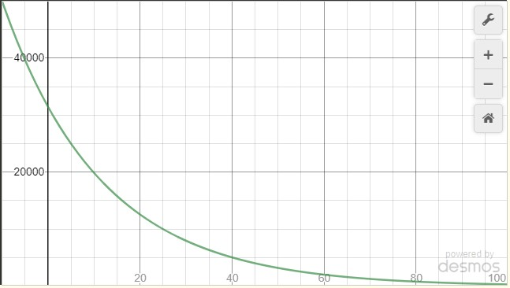
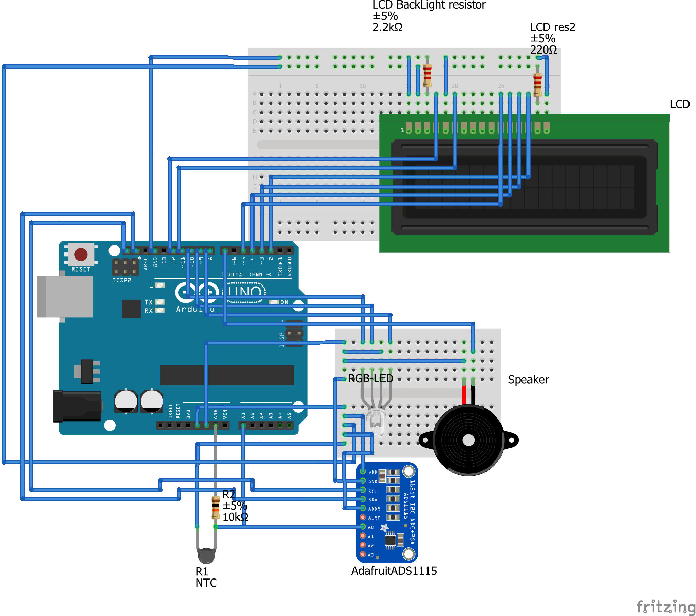

Guide to NPN thermistors
Coefficient Calculation
To calculate the temperature from the resistance of a thermistor, you need to use the Steinhart-hart
equation.
`1/T = A + BlnR + ClnR^3`
Where T is temperature, R is resistance, and A,B,C are Steinhart coefficients, which vary from thermistor
to thermistor. This page explains how to find the the three Steinhart-hart coefficients, to find the equation
for a thermistor, since different thermistor have different coefficients. You can easily find a few temperature
values, and the resistance values they produce, as an affect of the temperature. So you can make a system
of equations of the Steinhart equation. Since there are 3 variables, 3 corresponding values are needed.
Once you have 3 values then you can make a system of equations with three Steinhart equations with 3 known
resistance and temperature values:
`1/T_1 = A + BlnR_1 + Cln^3R_1`
`1/T_2 = A + BlnR_2 + Cln^3R_2`
`1/T_3 = A + BlnR_3 + Cln^3R_3`
which can be made written in matrix form:
\[
\begin{bmatrix}
1 & \ln R_1 & \ln^3 R_1 \\
1 & \ln R_2 & \ln^3 R_2 \\
1 & \ln R_3 & \ln^3 R_3
\end{bmatrix}\begin{bmatrix}
A \\
B \\
C
\end{bmatrix} = \begin{bmatrix}
\frac{1}{T_1} \\
\frac{1}{T_2} \\
\frac{1}{T_3}
\end{bmatrix}
\]
Apart from using matrices to calculate the Steinhart-hart equation, you can use one of my calibrators:
Online Calibrator
Java Calibrator
After solving the equation, you should double check the equations graph make sure to look at the range and domain
too. It should look similar to this:

Using Thermistors with Arduino
Wiring
The wiring depends on what kind of components you want to put in your circuit. I'm showing a schematic, that includes
a lot of possibilities to add to your circuit. Of course you need the thermistor, and the resistor with the thermistor
Decide how you want to show your data. You can choose to display your data via serial, lcd, led and/or a buzzer.
Decide if you want to use Arduino's adc or ads1115(which is way more accurate).

READ CAREFULLY:
I am writing code in multiple functions, kind of like a build your own PC, so do not just copy everything and run away. Read Everything in detail otherwise you will run into errors. I am also including comments, to ease that burden.First you should declare the libraries you are using. Copy whichever libraries you will be using, based on what hardware you are using, from below. If you do not have these libraries from before, then you should go to the library manager, and install them.
#include <Wire.h>; // wire library
#include <Adafruit_ADS1015.h>; // ADS1115 library
#include <LiquidCrystal.h>; // LCD Lets declare the Steinhart coefficients. If you used my Java Calibrator, then you can use the Copy as Arduino declaration button and paste that instead of the code below. I am also including values, that will probably have a +- 2°C accuracy for people who do not have means to calibrate But if you calibrate your thermistor really carefully, you will have an accuracy of +- 0.02°C.
double A = 0.0021085081731127137; // Steinhart coefficients
double B = 0.00007979204726779823;
double C = 6.535076314649466*10^-7;If you are using an ADC or an LCD, declare their variables too
Adafruit_ADS1115 ads1115(0x49); //ADS1115 object
LiquidCrystal screen(12, 11, 5, 4, 3, 2); //LCD object Next you should declare some other variables that you need for your code:
double opVolt = 5; // The voltage at which Arduino operates
double basRes = 10000; // rRef( reference resistance)
double e = 2.7182818284590452353602874713527; // E If you are using an RGB led, then Include this code
int r = 8, g = 9, b = 10; //rgb pinsIf you are using an Speaker, then Include this code
int s = 7; //Speaker pinNow lets write our setup code:
void setup(){ // setup codeIf you are using an RGB LED then include this code:
pinMode(r, OUTPUT);// Set the pinMode of all the colors of the rgb led.
pinMode(g, OUTPUT);
pinMode(b, OUTPUT);If you are using a Speaker then include this code:
pinMode(s,OUTPUT);//Set the pinMode to OUTPUTIf you are using an LCD then include this code:
screen.begin(16, 2); // Start the screen of the LCD.If you are using Serial to display the temperature then include this code:
Serial.begin(9600); // Start the Serial Interface.If you are using an External ADC then include this code:
ads1115.begin(); // Initialise the adcNow close the setup tag with a } Now lets go to the loop. Replace the pin? with an int: the pin at which you attach the thermistor. If you are using an external ADC then just put the number, but if you are not, then put A-pinNumber, like A0.
void loop(){ // Loop code
int temp = getTemp(pin?,A,B,C);If you are using the RGB led, then add this code:
if(temp<=18) { // if temp is less than 18
digitalWrite(b,HIGH); // turn b on
digitalWrite(g,LOW); // turn g off
digitalWrite(r,LOW); // turn r off
} else // else
if(temp>18 && temp<40) { // if temp is between 18 & 40
digitalWrite(b,LOW); // turn b off
digitalWrite(g,HIGH); // turn g on
digitalWrite(r,LOW); // turn r off
} else // else
if(temp>=40) { // if temp is more than 40
digitalWrite(b,LOW); // turn b off
digitalWrite(g,LOW); // turn g off
digitalWrite(r,HIGH); // turn r on
}If you are using a Speaker then include this code:
if(temp>60){digitalWrite(s,HIGH);} else {digitalWrite(s,LOW);} // if temp if more than 60, then turn the speaker on, else turn it offIf you are using an LCD then include this code:
screen.clear(); // clear the screen
screen.print("Temp = "+ temp); // print temp on the screen If you are using the Serial port then include this code:
Serial.println("Temp = "+ temp); // print the Temp on the serial portNow close the loop tag with a } Now write the getTemp and getR functions:
double getTemp(int pin, double Av , double Bv , double Cv) {
double res = getR(pin);
return (1.0 / (Av + Bv * (double)ln(res) + Cv * (double)cb((double)ln(res)))) - 273.15;
//Use the steinhart-Hart equation with the resistance from analog input
}
double getR(int pin) {
double v = getV(pin);
return (basRes * (opVolt - v) / v); // use the simplified voltage divider equation to find resistance
} If you are using an external ADC, then type
double getV(int pin) {
double volt = ((double)(ads1115.readADC_SingleEnded(pin)) / (double)32768) * 6.144;
/* Theory time:
* Arduinos Onboard ADC reads from 0 to 32767(16 bit)
* Since there are 32768 values possible, giving a range of 6.144 volts, we need to divide by 32768 and multiply by 6.144 volts.
*/
return volt;
}If you are using the internal ADC, then type
double getV(int pin) {
double volt = ((double)(analogRead(pin)) / (double)1024) * 5;
/* Theory time:
* Arduinos Onboard ADC reads from 0 to 1024(10 bit)
* Since there are 1024 values possible, giving a range of 5 volts, we need to divide by 1024 and multiply by 5 volts.
*/
return volt;
}Now you need to write the ln and cb functions
double ln(double val) {
return (log(val) / log (e));
// Natural log function
}
double cb(double val) {
return val * val * val;
// cube function, cuz why not
} Autoformat your code, and that should be it!